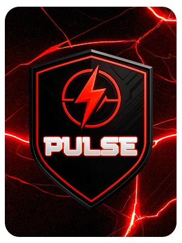
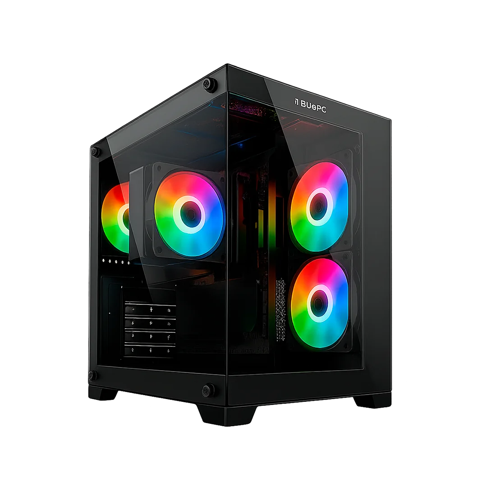

Processamento
Plataformas Intel para jogos. Confirme o chipset, o soquete e o processador do modelo escolhido.
Nenhuma linha encontrada. Tente Gamer, Office ou Workstation.
PC Office · Trabalho e estudosWorkstation · Arquitetura e criaçãoPC Gamer · Jogos e ediçãoLinha FireLinha LudicLinha AuraLinha PulseLinha FragBLUEPC GAMER / PULSE
Conheça os computadores Pulse e encontre uma configuração para o seu setup.
Consultar modelos Pulse
SOBRE A LINHA
Sinta a adrenalina em cada jogada. A linha Pulse combina processadores de múltiplos núcleos e gráficos NVIDIA GeForce RTX, com recursos como DLSS e Ray Tracing nos jogos compatíveis.
CONFIGURAÇÕES DA LINHA
As opções variam por modelo. Confira a configuração completa e a disponibilidade no canal de compra.
Plataformas Intel para jogos. Confirme o chipset, o soquete e o processador do modelo escolhido.
Opções de 16 GB ou 32 GB. A geração DDR e a frequência devem ser confirmadas na configuração escolhida.
Opções apresentadas: RTX 3050, 3060, 5060, 5060 Ti, 5070 e 5070 Ti, conforme o modelo.

DO SEU JEITO
Painel em vidro temperado, conexões USB frontais e projeto voltado a upgrades.
Frente em mesh, vidro temperado e projeto com foco em refrigeração.
Imagens ilustrativas. Gabinete, ventiladores e conexões variam por configuração.
PRÓXIMO PASSO
Fale com nossa equipe para encontrar os modelos desta linha nos canais de compra.
Consultar modelos PulseCONTINUE EXPLORANDO
Vamos encontrar seu próximo PC
Conte o que você precisa. A BluePC ajuda na escolha.